不相上下
完全忘記自己上次睡在田裡的代價是什麼，這次又很開心的跑來睡麥田。
睡在這麼空曠的地方，真是比睡在冰箱還冷，還好有打開睡袋來用，夜裡潮濕得讓我懷疑是不是尿床了？
睡醒還沒爬出帳篷，拿著相機先拍一張，這就是從麥田裡醒來所看到的畫面。
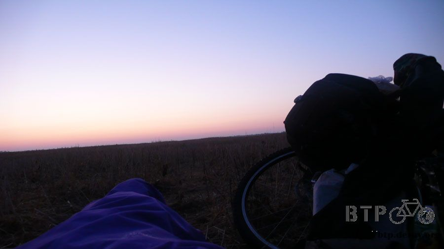
凝重的濕氣無所不在，披在小多上的衣服都是濕的，帳棚上也是凝結了一堆的露水，裡面的睡袋也難逃一劫，雖然沒被外星人綁架，但是也好不到哪裡去。
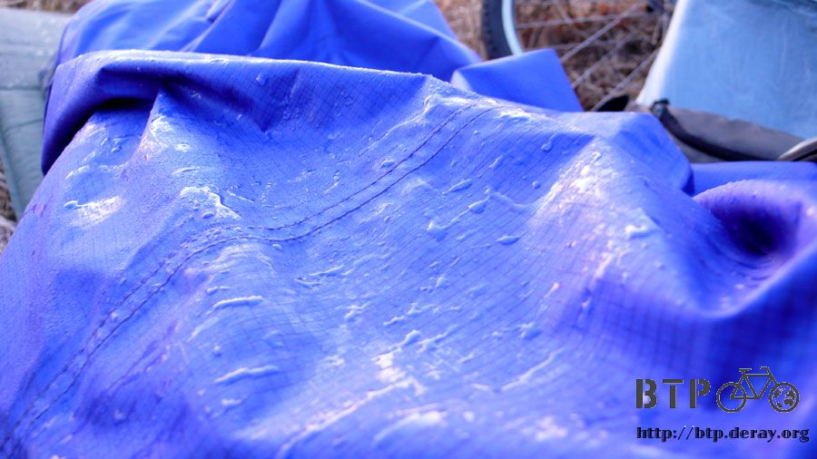
進入白俄羅斯之後，時差又增加了一小時，在莫斯科的時候和台灣差四小時，現在則差了五個小時。
開始騎車的時候太陽才懶洋洋的冒出來，等正午太陽強的時候再找地方曬潮濕的露營裝備。
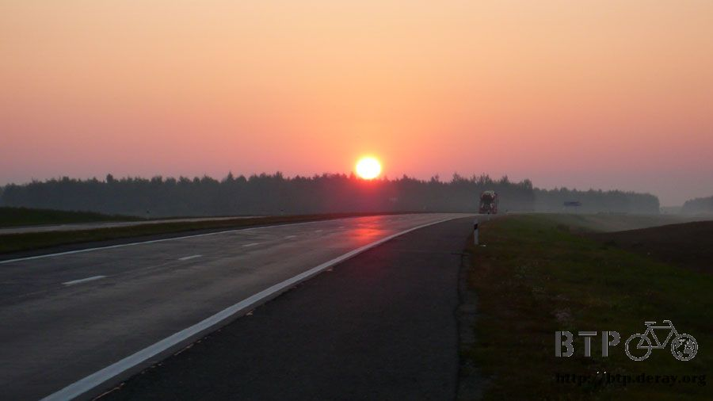
濃濃的霧氣讓晨間的溫度恆溫維持在二十度上下，早上還得穿厚的衣服才不會著涼，等覺得熱再換穿薄的衣服。
之前覺得換來換去很麻煩，現在怕感冒或中暑，所以還是勤勞一點的好。
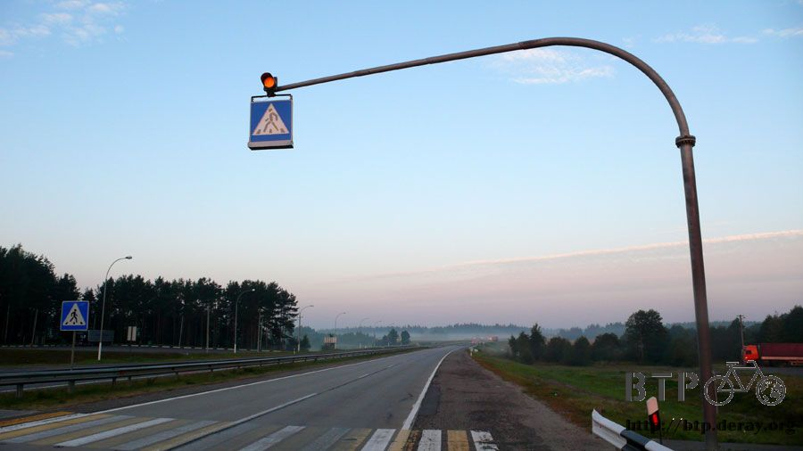
剛出發又是道路封閉一半的情形，封閉的這一邊路況還不錯，與其跟限速一百二十公里的汽車爭道，不如騎在屬於自己的專用道上。
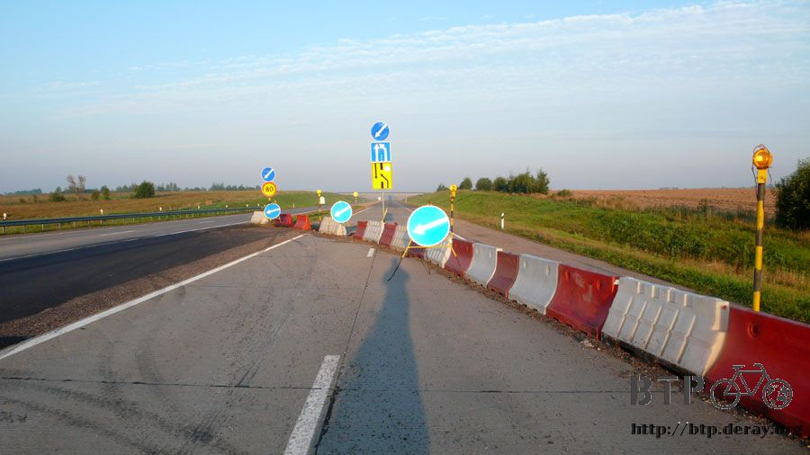
好景不常，三分鐘後就變成這樣了，再度爆胎，白俄羅斯這一段路才短短一個星期左右，也在這邊爆了一次。
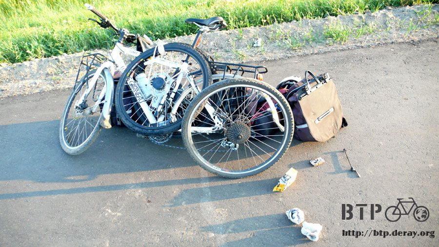
兇手就是這一段小小的鐵絲，因為外胎越來越薄，像這種沒什麼殺傷力的也可以刺穿。
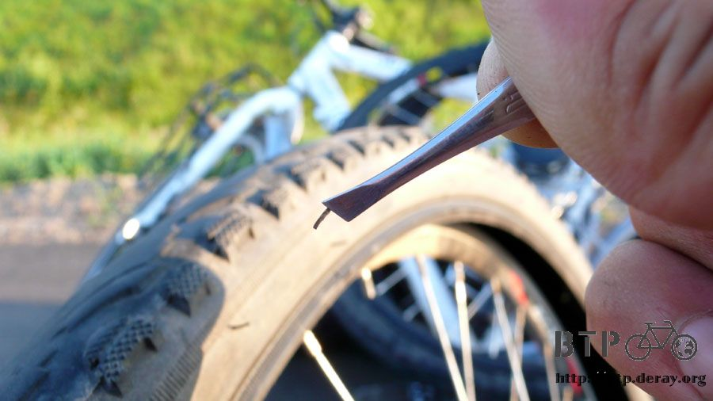
換上這一條內胎之後，只剩下一條全新的內胎以及七條破掉的，該是找時間把破胎補一補當備用胎的時候了。
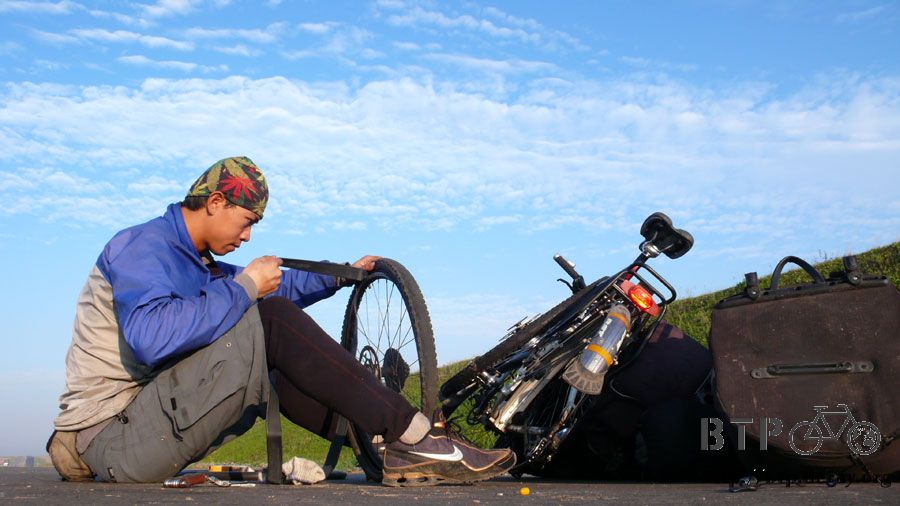
哈薩克的馬路沿路都是寶特瓶空罐，真的是延著一千多公里丟個不停，到處都是空瓶子。
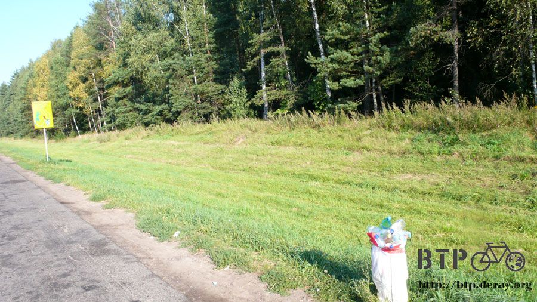
俄羅斯跟白俄羅斯就沒有這樣的情況，路邊很乾淨，偶爾在荒郊野外出現垃圾桶，駕駛就會乖乖的停在這裡丟空瓶子。
我自己吃喝的垃圾都是先放在口袋，等看到公車站的時候再拿去垃圾桶丟。
睡在麥田裡還蠻舒適的，擔心的是露營裝備受潮的情形，上午要找的餐廳除了可以讓我充電、擦澡、吃飯寫遊記之外，還要有欄杆可以曬裝備。
十點多發現這一間餐廳，感覺還不錯，只有一個很大的問題，要爬樓梯才能上得去。
遇到這樣的情形只能搖搖頭離開，繼續找下一間適合的餐廳。
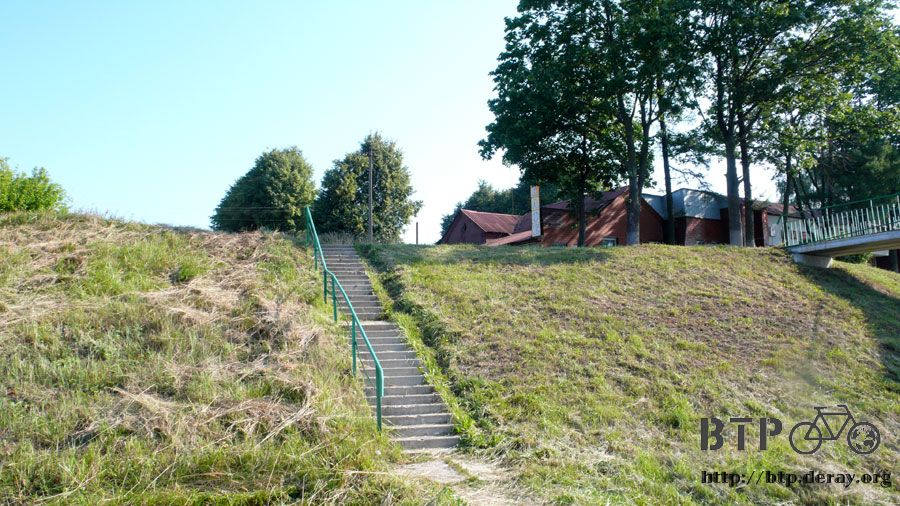
又過了一個多小時，太陽開始越來越大，心目中理想完美的餐廳也適時的出現。
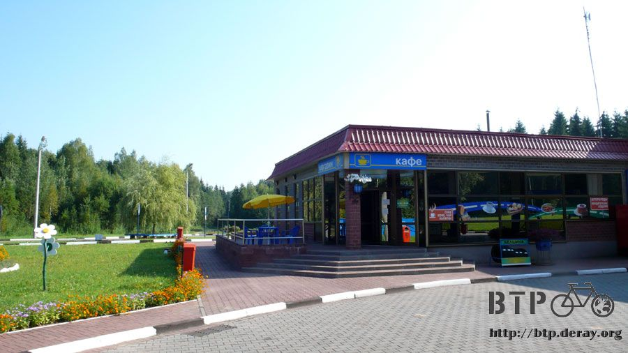
多謝這些又長又乾淨的欄杆，睡袋、帳篷、睡墊全部打開曝曬，餐廳的員工也不會囉嗦的阻止，都是很熱心的好人，問我昨天在哪邊露營搞成這樣？
擦過澡之後連衣服也一起拿出來曬，接下來要在餐廳裡面待上至少兩個小時，肯定能夠曬得乾呀。
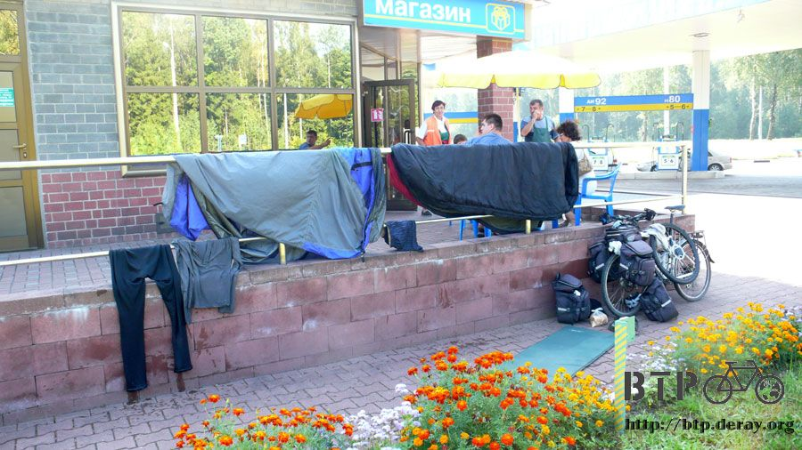
餐廳的招牌寫的都是『咖啡』，比較高級的餐廳才會寫『餐廳』。
但不是每一個寫咖啡的都會有賣吃的，這一間看起來雖然很大，但完全沒有供應熱食。
我說想吃肉類，店員就開了一個牛肝罐頭，說這個可以抹在麵包上面吃。
想吃沙拉，就從冰箱裡面拿出超市賣的那種調配好的沙拉，麵包則是口感微酸外表發霉的黑麵包，整餐只有咖啡還不錯喝。
這一餐實在算不上多豐盛，牛肝罐頭的味道有點奇怪，只吃了半盤就舉白旗投降了。
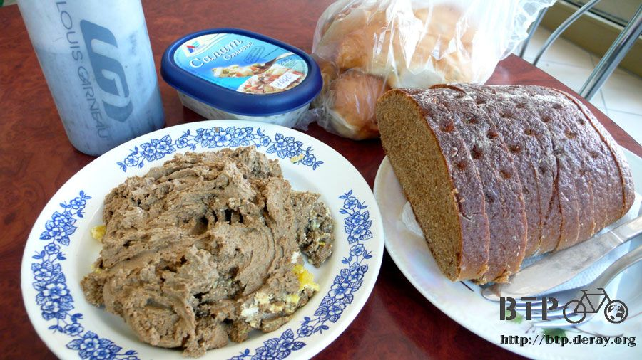
整理遊記的同時在店裡買了果汁，價錢很便宜，但是從外包裝完全看不出這是什麼口味的果汁。
只好憑運氣挑了兩個不同顏色的包裝，結果一個是芒果汁，另一個則是野莓汁。
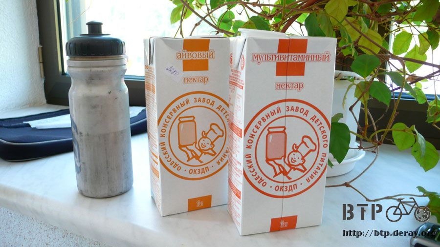
填飽肚子、遊記寫完、露營裝備也曬乾，睡袋變的蓬鬆，每次只要想到要將這麼大的睡袋塞到小小的袋子裡，都會讓我一個頭兩個大。
下午兩點，避過了最炎熱的中午時段，趁雲朵蔽日的時候上路吧，今天目標是首都明斯克。
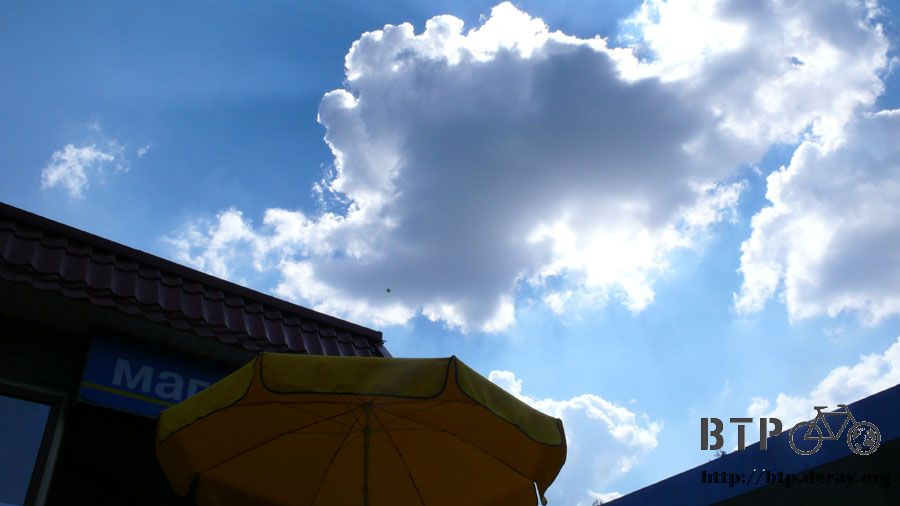
公路上會看見溫度計，同時顯示現在的溫度以及路面的溫度，大白天氣溫不到三十度還算涼爽。
標示路面溫度是要給大卡車看的，有些路段在太熱的時候禁止大卡車通行，因為會把好好的柏油路給壓得凹凸不平。
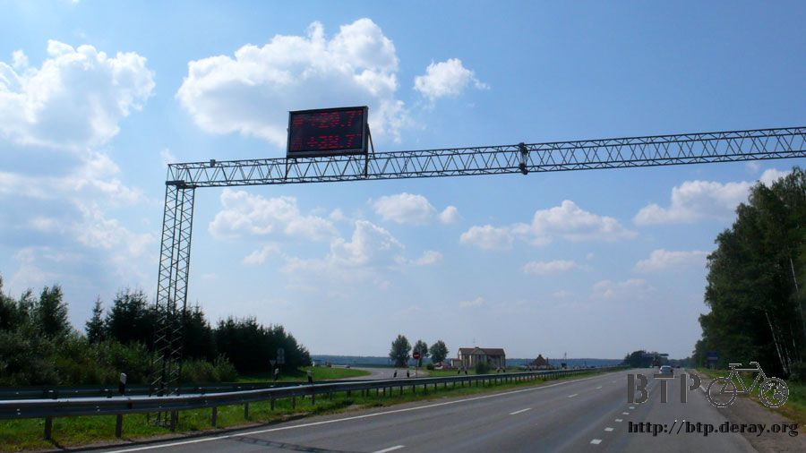
下午遇到一位白俄羅斯當地的單車騎士，一邊騎車一邊閒聊兩句。
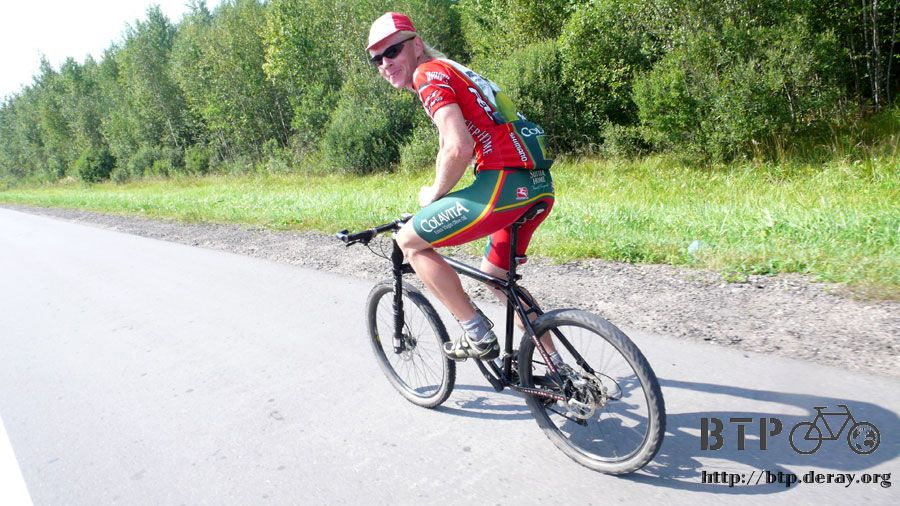
因為我騎車的速度很慢，小孩騎三輪車也可以將我無情的超車，他則是很好心的跟在旁邊陪我騎一段。
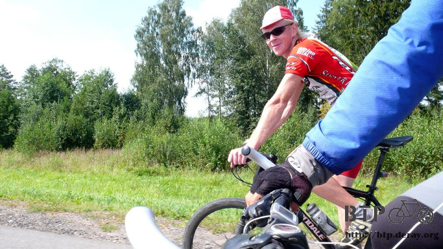
巧合的是兩個人用的單車馬錶都是SIGMA，連型號都一模一樣，左邊是我的馬錶，累積至今已經超過一萬公里，右邊是他的馬錶，居然也突破一萬。
如果只是閒暇的時候東繞西晃，要騎超過一萬公里是很不容易的事情，猜想他應該有騎過長途旅行的經驗吧。
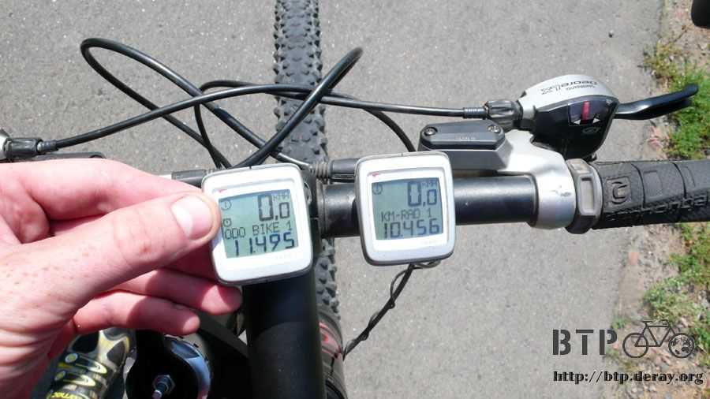
騎經這條河的時候他叫我停一下，說河的那一邊有個城市，那邊就是他的家鄉。

如果我願意的話，今天可以在他們家住一晚上。
真是蠻不錯的提議，可是現在還太早，才下午三點多而已，點頭道謝，說今天的目標是明斯克，還得再騎一段路。
閉～氣～通～過～～呼！
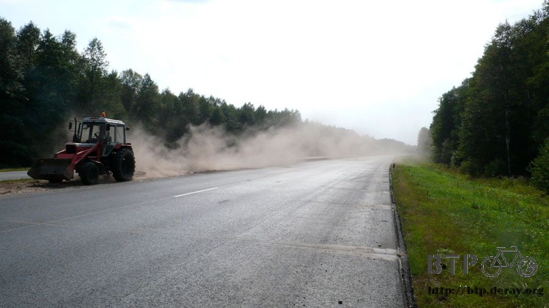
其實不光是飛機會遭遇鳥擊，騎自行車也是有可能會被鳥給撞到的，旁邊種了滿山遍野的玉蜀黍，這些麻雀很喜歡吃玉蜀黍？

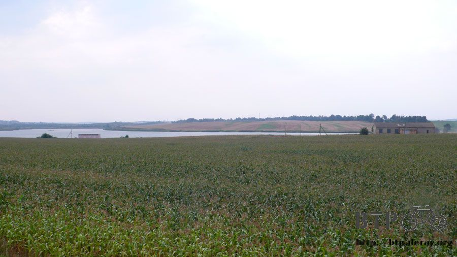
終於距離首都只剩下三十七公里，此時烏雲開始盤據，風勢也很不給面子，吹的是逆風，今天晚上大概會下雨吧。
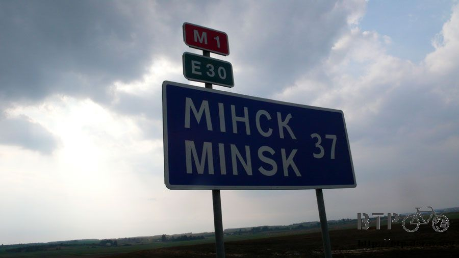
小麥堆的第三種型態，除了小山型、圓柱堆之外，就是這種方塊型的小麥堆，方方正正的看起來很像床。
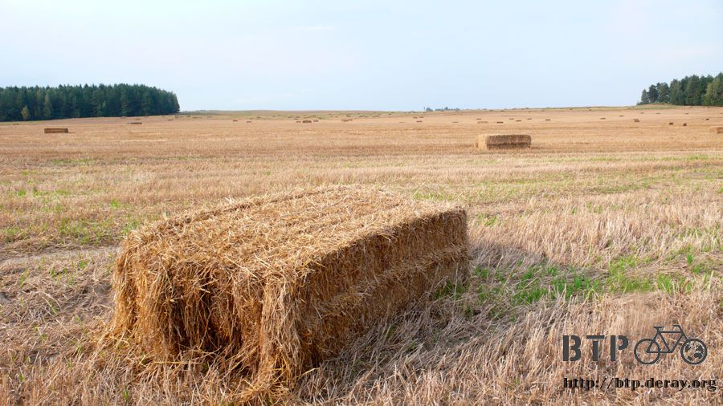
看到這個只要是人都會想躺躺看吧～還是我比較無聊~_~？
昨天晚上要是睡在這邊那就更有住旅館的感覺了。
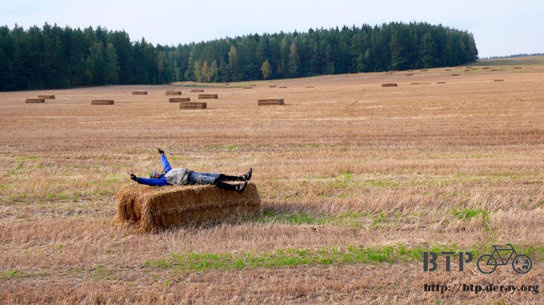
看到這個告示牌的時候我有一點猶豫，要離開主要道路才有辦法騎到首都去。
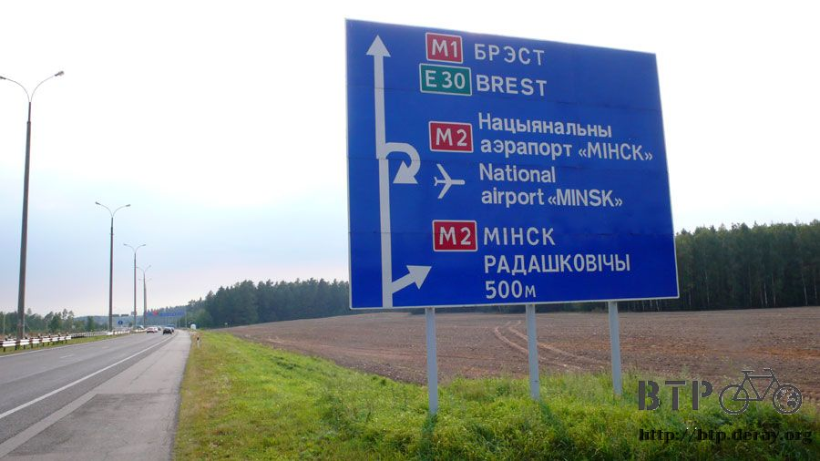
不想去的原因是要繞路，以及往首都的方向是大逆風，再加上烏雲罩頂。
想去的理由則是需要網路上傳遊記，而且畢竟明斯克是首都，到一個國家沒經過首都有點奇怪。
掙扎了一下還是往首都的方向騎，心裡只能默默期盼著在落腳之前千萬不要下雨，這邊空曠又荒涼，找不到地方躲雨的。
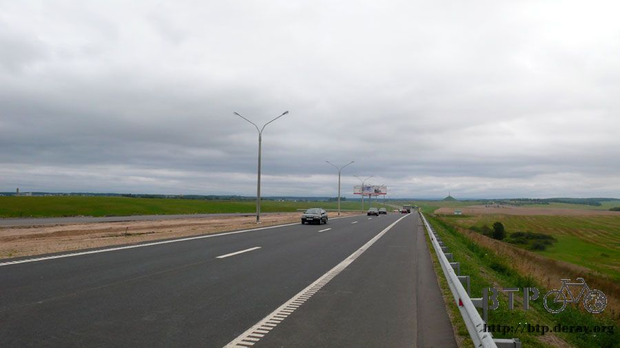
進入大城市要露營比較麻煩，旅館也貴得不像話，找餐廳待一晚上永遠是計畫之一。
這間餐廳的停車場停了一堆坦克車是怎麼回事？@@"
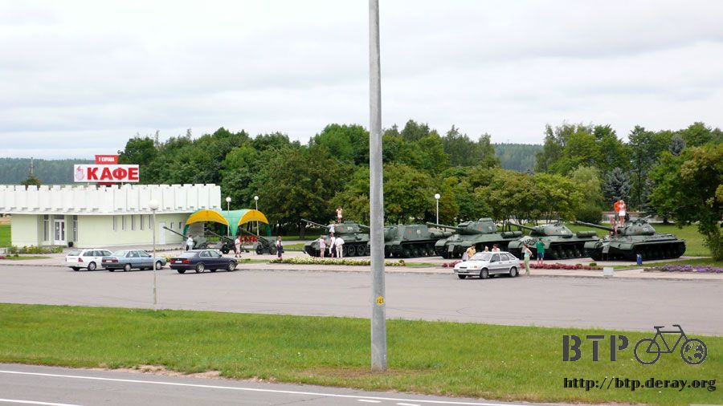
一邊尋找適合的過夜處所，一邊往首都的方向騎。
半路就被警車給攔了下來，護照交出去檢查，白俄羅斯的警察還蠻和善的，護照還給我的時候還說了好幾聲加油。
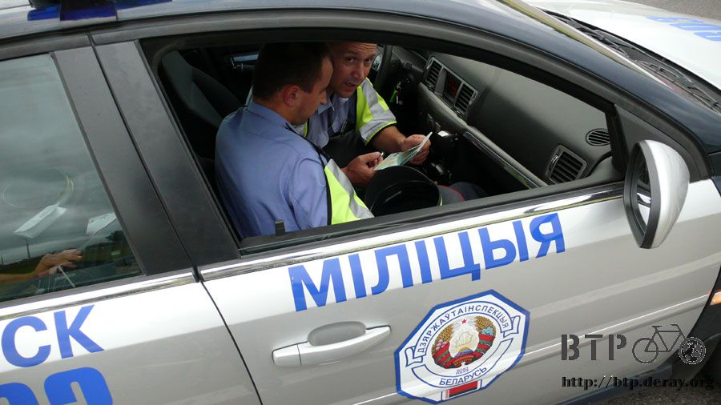
晚上七點多，還是沒發現適當的落腳處，連商店跟餐廳都很少見，終於找到一間的時候想買點喝的。
拿了一瓶汽水掏出盧布的時候店員說不收這個，只收白俄羅斯的貨幣。
昨天還可以使用，結果到了首都就不行了，有錢卻不能花的感覺實在很不爽。
走到店門口的時候遇到三個年輕人，從我抵達商店、進去買東西到嘆氣走出來，都被他們看在眼裡。
他們很好心的說可以幫我買，就算是被騙我也認了，拿出一張一百盧布，請他們幫忙買兩瓶汽水。
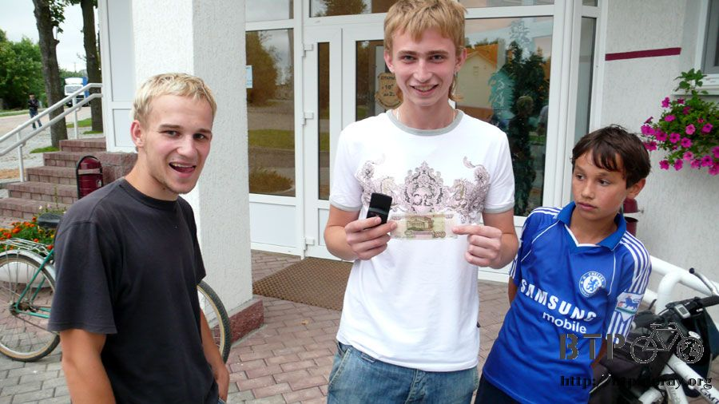
三分鐘後年輕人就拎著兩瓶冰涼的汽水出來，而且還有錢可以找。
一百元買了兩瓶汽水，居然還可以找回四千元！
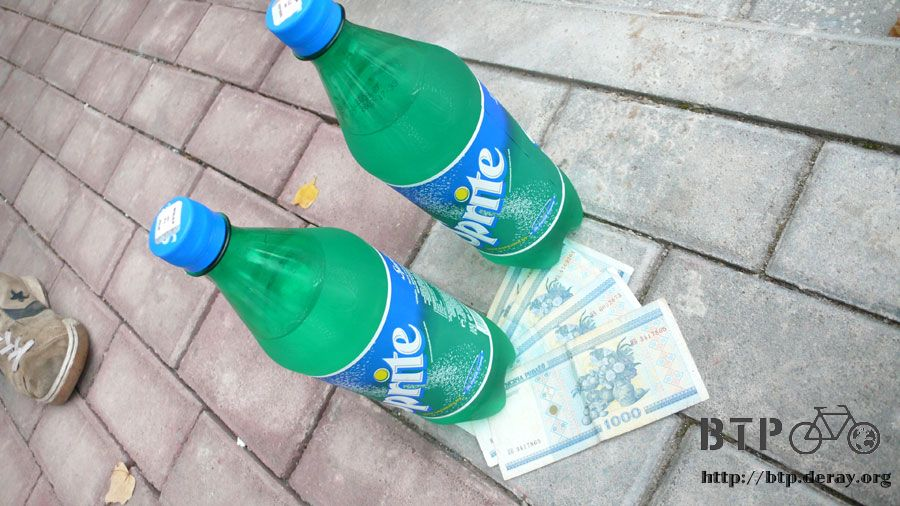
白俄羅斯的貨幣實在太薄了，紙鈔上面額一張十萬都是小意思，當我看著這四千元滿臉迷惑的時候。
年輕人解釋說，一塊美金可以換兩千塊白俄羅斯的錢。
通貨膨脹這麼大的國家，餐廳居然還不收盧布？這可是強勢貨幣呢，實在太沒眼光了。
一邊喝汽水一邊找過夜處，理想情況是不要進入首都就可以落腳。
看到交流道下的公車站，直覺就是這邊冷清得可以，又有屋頂可以躲雨，睡一晚沒什麼問題吧？
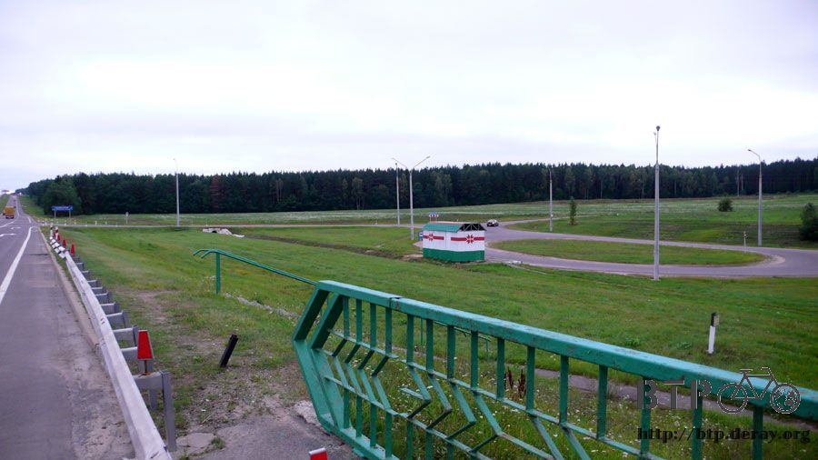
可惜下去一看裡面已經有人了，總有先來後到的差別，只好再找下一個地方，漸漸的公車、地下道、天橋逐一出現，離市區越來越近的感覺。
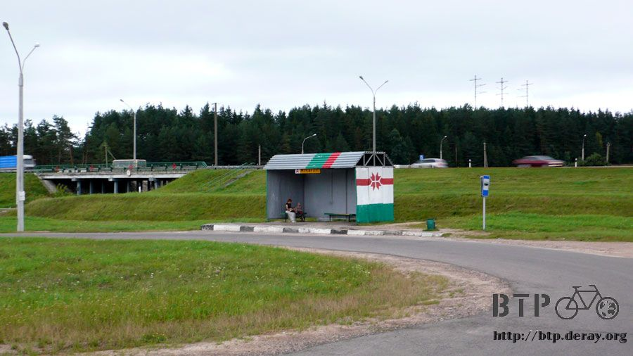
再怎麼不情願還是騎到了市區，過了這個牌子就要換個心態，郊區跟大城市往往都是兩種面貌，警戒心得提高一點。
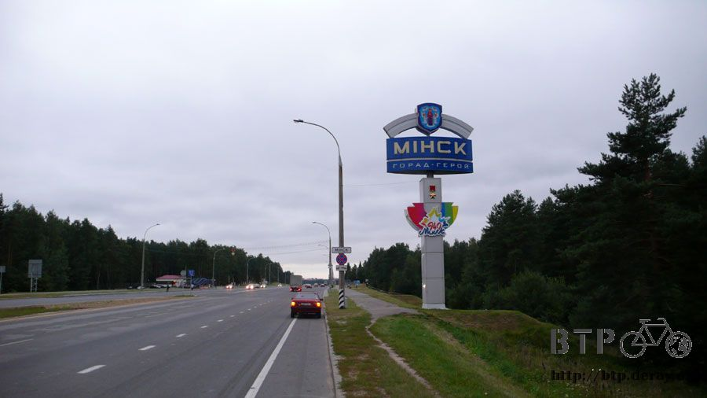
沿路經過的公車站裡頭都有人，地鐵要到市區才有，外圍都是靠公車在接駁，今天睡公車站的計畫得泡湯了。
天色漸暗、大雨已經要傾盆而下的感覺，眼前出現一棟體育館，也許能在這邊找到遮風避雨的場所。
體育館的外頭掛著奧運金牌得主的大海報，周邊有許多的建築物、宿舍、咖啡廳，這一區還蠻文明的，但是流動的人則不多。
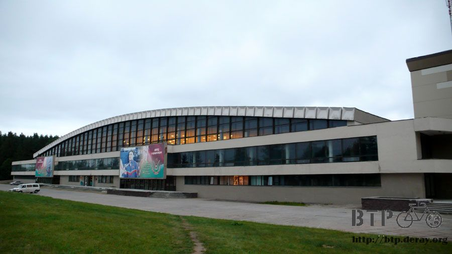
晚上下雨的機率是百分之百，不用看氣象報告也能肯定。
在體育館後方的小樓梯間發現蠻不錯的露營場所，地上雖然髒了點，就是一些乾掉的青苔、小碎石，但還過得去。
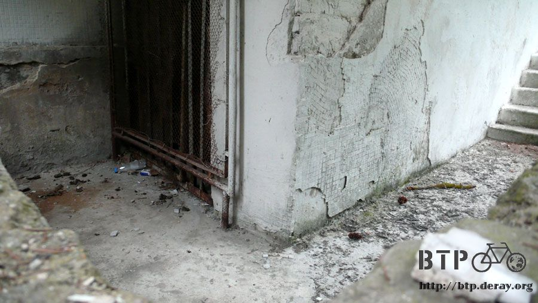
這邊掉了很多超大顆的松果，拿眼鏡當比例尺就知道有多大一顆，可惜不能拿來吃，晚餐就喝汽水配麵包打發掉了。
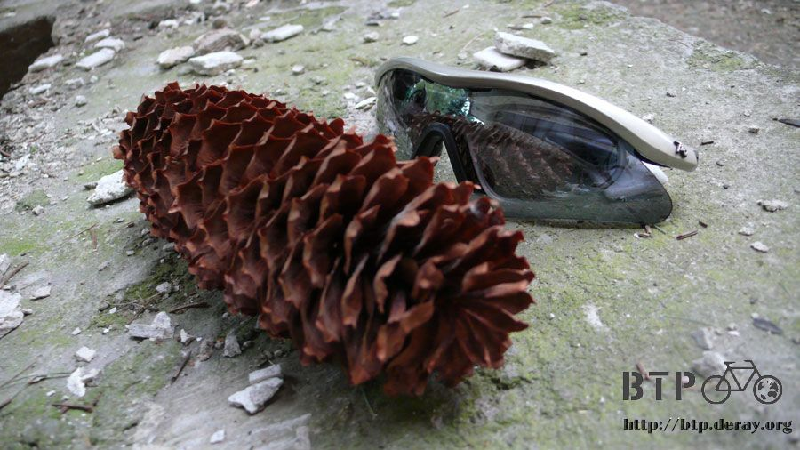
牽著車準備要進去的時候，就看到兩個腰間繫警棍，身穿警衛衣服的人在巡邏，難道這裡是國家的機構嗎？
與其半夜睡到一半被警衛發現然後趕走，不如先老實的問一下可不可以在這裡過夜。
舉起手揮舞想引起警衛的注意，他們轉頭看了我一眼，也跟我揮揮手打招呼然後就繼續去巡邏了，我連開口問可不可以過夜的機會都沒有。
看他們的反應，應該是沒問題吧？
卸下裝備搭建起睡覺的地方，這個樓梯間比地面還凹陷一公尺左右，路過的人不容易發現裡頭有人。
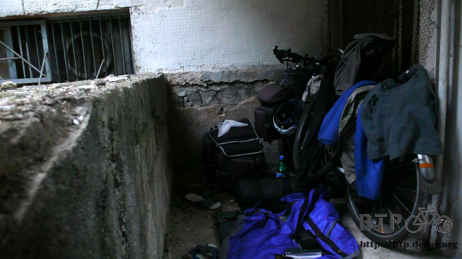
才躺進帳篷裡沒多久，那兩個巡邏的警衛又走了回來，這次走到樓梯間停下腳步，看著躺在帳篷中的我。
你們現在知道我剛剛揮手不是單純的打招呼了吧？
心裡覺得不太妙，八成要趕我走了，他們又再度跟我揮揮手，然後離開繼續巡邏。
真是太神奇了，是因為這裡是體育館，所以像我這樣騎單車旅行的人可以隨意露營沒問題嗎？
既然警衛不會找麻煩，又很勤快的來回巡邏，那夜間的安全也就不用顧慮了，還沒睡著雨滴就嘩啦啦的落下，打在樹葉上發出的沙沙聲聽起來非常的響。
這時才想到樓梯間比地面還要低陷，地上又都是乾掉的青苔，該不會下大雨之後，水會淹到這裡來吧？
除了默默的祈禱，也提醒自己下次出來旅行一定要帶個晴天娃娃，拜託早上不要在水窪裡醒過來。
繼續閱讀：8.18 超級大富翁
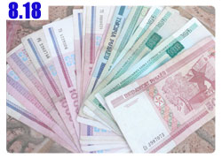
俄羅斯-盧布－ 1：1.3 台幣
8.17 |
總計：270元 |
餐廳牛肝罐頭、發霉黑麵包、沙拉、咖啡、葡萄麵包150元、標示不明的果汁兩盒70元、雪碧兩瓶50元 |
|